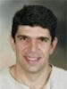
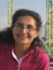

Conference Organizing Committee |
| Marios Polycarpou General Chair Univ. of Cyprus |
| Thomas Parisini Program Chair Imperial College, UK |
| Christos Panayiotou General Co-Chair Univ. of Cyprus |
| Christoforos Hadjicostis General Co-Chair Univ. of Cyprus |
| Laura Menini Publications Chair Univ. di Roma “Tor Vergata”, Italy |
| Andrea Serrani Publications Chair The Ohio State University, USA |
| John Lygeros Workshops and Tutorials Chair ETH Zürich |
| Stelios Timotheou Local Arrangements Chair Univ. of Cyprus |
| Christos Laoudias Local Arrangements University of Cyprus |
| Demetrios Eliades Local Arrangements University of Cyprus |
| Mihalis Tsiakkas Local Arrangements University of Cyprus |
| Panayiotis Kolios Local Arrangements University of Cyprus |
| Savvas Papaioannou Local Arrangements University of Cyprus |
| Despina Petrou ECC 2018 Conference Secretariat KIOS Center of Excellence University of Cyprus |